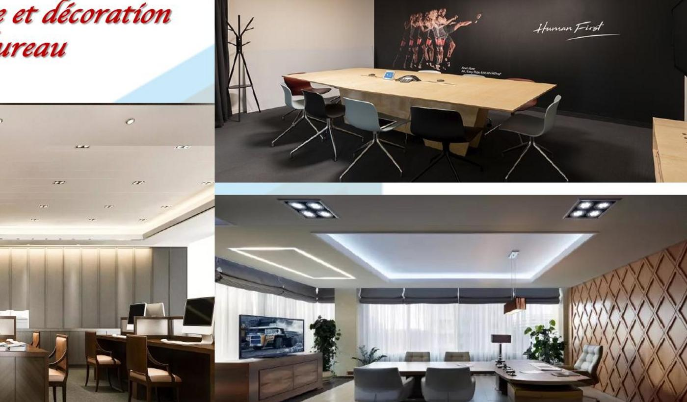
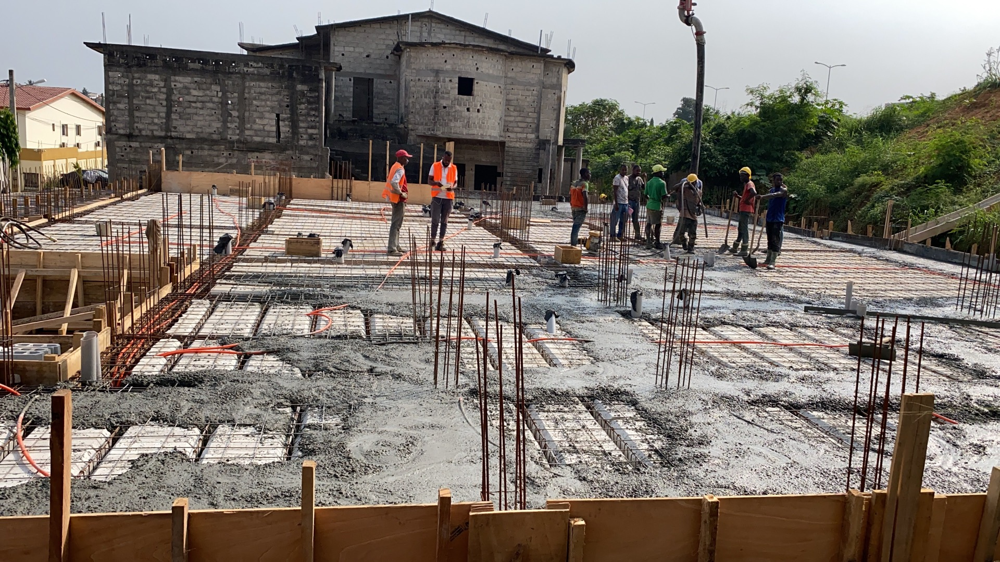
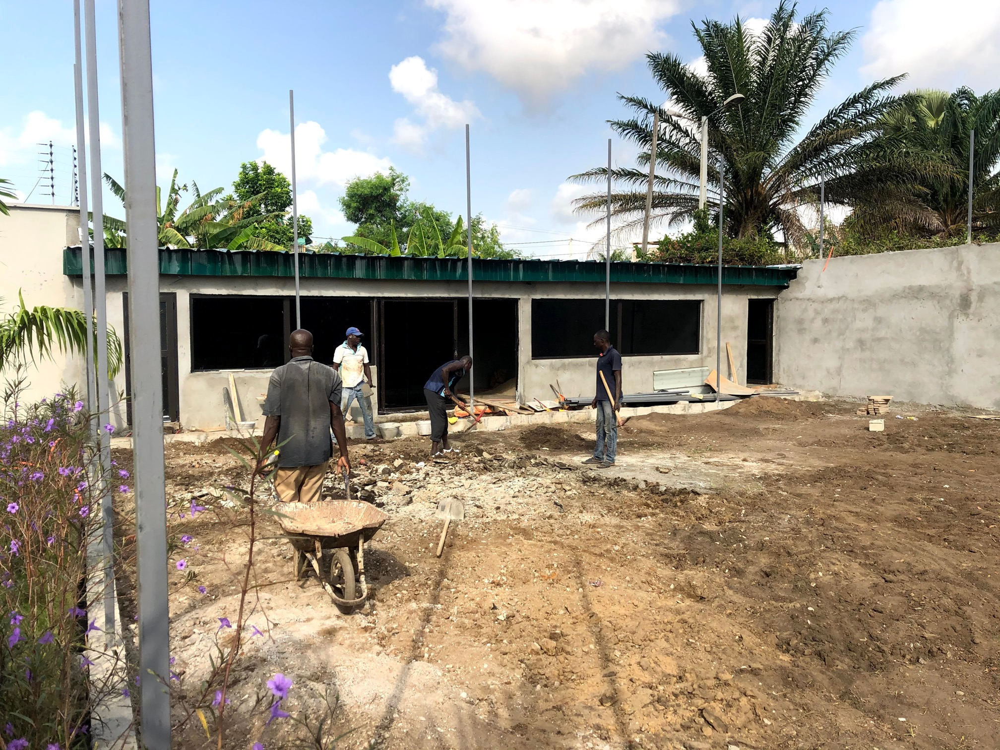

Qualification des charges
Les équipements, postes et zones sensibles sont identifiés en fonction de leur usage réel et du niveau de continuité attendu.
Nous sécurisons la lecture des charges, la cohérence entre alimentation et réseau, la continuité de service et les interfaces avec l'aménagement pour éviter les oublis critiques, les suréquipements inutiles et les correctifs de dernière minute.
Les équipements, postes et zones sensibles sont identifiés en fonction de leur usage réel et du niveau de continuité attendu.
Circuits, prises, points de réseau et éléments de distribution sont organisés sans surcharge ni improvisation.
Les équipements qui ne doivent pas tomber sont repérés plus tôt pour intégrer la bonne logique de protection ou de secours.
Le site est préparé pour une exploitation plus fluide grâce à des tests, une mise en route et une documentation de base plus nettes.
Nous structurons cette expertise autour de la lecture des besoins, du réseau-distribution et de la continuité de service, afin de couvrir les décisions qui rendent un espace réellement opérationnel le jour de sa mise en activité.
Nous partons des besoins réels du site pour distinguer ce qui doit simplement être alimenté, ce qui doit rester connecté et ce qui exige une protection particulière en cas de coupure ou de fluctuation.
Liste structurée des équipements, postes et usages à intégrer dans le site.
Lecture simple des charges, des points à desservir et des priorités de distribution.
Orientation claire pour les circuits, protections, points réseau et besoins de secours.
Nous structurons la distribution électrique légère, les prises, les circuits utiles, le câblage et le réseau de données pour que les espaces de travail, de vente ou d'accueil fonctionnent sans bricolage ni correction tardive.
Organisation des circuits, prises, points réseau et zones de desserte utiles.
Lecture simple du câblage, des points de connexion et de la baie si nécessaire.
Support de coordination pour installation, tests et démarrage du site.
Nous intégrons la logique d'onduleur et de continuité de service lorsque certains équipements, postes de travail, caisses, systèmes réseau ou fonctions d'accueil doivent rester disponibles pendant une interruption.
Postes, équipements et fonctions à maintenir en service ou à protéger en priorité.
Lecture du niveau d'onduleur, de l'autonomie et des priorités de couverture.
Base de vérification pour une mise en service et une reprise d'activité plus sereines.
Notre méthode relie la qualification des charges, la distribution utile, le réseau, les protections et les essais de fonctionnement pour que le site entre en service sur une base plus fiable.
Lecture des espaces, des postes utilisateurs, des équipements et des usages du site.
Identification des charges, des points réseau, des priorités de disponibilité et des contraintes d'exploitation.
Organisation des circuits, prises, points données, baie légère et éléments de distribution utiles.
Définition des protections, intégration de l'onduleur et logique de couverture des postes sensibles.
Vérification fonctionnelle, démarrage et base documentaire minimale pour l'exploitation du site.
Nous accompagnons à la fois les clients qui veulent un site fiable dès son ouverture, et les partenaires qui doivent câbler, distribuer, protéger, connecter ou exploiter l'infrastructure à nos côtés.
Cette expertise s'exprime particulièrement sur les bureaux, commerces, espaces d'accueil et environnements aménagés où alimentation utile, connectivité et disponibilité des postes doivent être pensées avant l'ouverture ou la relance du site.

Une intervention représentative des sites où la continuité d'usage dépend directement d'une distribution et d'une connectivité bien pensées.

Une typologie pertinente pour les environnements où l'ouverture, l'accueil et le fonctionnement des équipements doivent être fluides dès le premier jour.

Une situation fréquente quand il faut intégrer la technique proprement dans des espaces déjà existants ou en cours de transformation.
Cette expertise concerne aussi les espaces où certains équipements ne doivent pas tomber, où la connectivité conditionne l'activité et où un niveau minimal de secours améliore nettement la fiabilité d'exploitation.